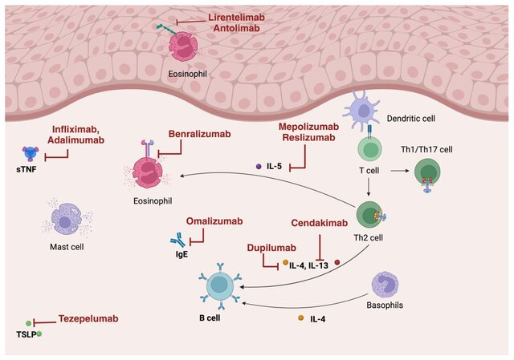

Eosinophilic Esophagitis (EoE) is a chronic, immune-mediated disorder of the esophagus with rising prevalence in children and adults. This review surveys both established and emerging therapies for EoE, from dietary interventions and PPIs to the newest biologic agents in clinical trials.
EoE is now the leading cause of dysphagia in children and young adults and the second most common chronic esophagitis after GERD. With dupilumab's recent FDA approval and several biologics in the pipeline, a clear overview of the evolving treatment landscape is essential for clinical decision-making.
EoE results from genetic predisposition and environmental triggers driving a dysfunctional Th2 immune response. Guidelines recommend PPIs, topical steroids, and dietary elimination as first-line treatments. Newer biologic therapies targeting IL-4/IL-13, IL-5, IgE, and TNFα pathways are reshaping the treatment paradigm.

| Therapy Category | Mechanism | Histologic Remission Rate | FDA Status for EoE | Key Limitations |
|---|---|---|---|---|
| Proton Pump Inhibitors (PPIs) | Acid suppression; anti-inflammatory effects on esophageal epithelium | ~42–50% | Off-label (standard of care) | Long-term safety concerns; reduced efficacy in fibrostenotic phenotype |
| Topical Steroids (Budesonide/Fluticasone) | Local anti-inflammatory; suppression of eosinophilic infiltration | ~50–71% | Off-label (standard of care) | Esophageal candidiasis (5–30%); relapse after withdrawal |
| Dietary Elimination | Removal of food allergen triggers (milk, wheat, egg, soy, nuts, seafood) | Up to 74% (six-food elimination) | N/A (non-pharmacologic) | Low compliance; requires repeated endoscopies |
| Dupilumab (Anti-IL-4/IL-13) | Blocks IL-4Rα subunit; inhibits IL-4 and IL-13 signaling | ~59–68% | FDA Approved (2022; expanded 2024) | Injection site reactions; insurance access barriers |
| Anti-IL-5 Agents (Mepolizumab, Reslizumab, Benralizumab) | Targets IL-5 to reduce eosinophil proliferation and survival | Significant eosinophil reduction, but limited symptom improvement | Investigational | Disconnect between histologic and symptomatic response |
| Cendakimab (Anti-IL-13) | Blocks IL-13 interaction with IL-13Rα1 and IL-13Rα2 | ~50% achieved <15 eos/hpf | Investigational (Phase 2) | Limited long-term data |
| Emerging Agents (Lirentelimab, Tezepelumab, Etrasimod) | Anti-Siglec-8, anti-TSLP, S1P receptor modulator | Lirentelimab: 88–92%; Etrasimod: 46% eosinophil reduction (2 mg dose) | Investigational (Phase 2/3) | Ongoing trials; long-term safety unknown |
A comprehensive literature review synthesizing clinical trial data, societal guidelines, and pharmacologic studies across pediatric and adult EoE populations.
| Agent | Mechanism | Half-Life | Bioavailability | Time to Clinical Response |
|---|---|---|---|---|
| Dupilumab | Anti-IL-4/IL-13 | Target-mediated (nonlinear) | 61–64% | 2–4 weeks |
| Mepolizumab | Anti-IL-5 | 16–22 days | 80% | N/A |
| Reslizumab | Anti-IL-5 | 24 days | N/A | N/A |
| Omalizumab | Anti-IgE | 26 days | 62% | 12–16 weeks |
| Infliximab | Anti-TNF | 7–12 days | N/A | 2–8 weeks |
Biologics like dupilumab may shift from refractory-only to first-line use, especially for patients with comorbid atopic conditions. Key priorities include long-term safety data for investigational agents (cendakimab, lirentelimab, tezepelumab, etrasimod) and resolving the histologic-symptomatic disconnect seen with anti-IL-5 therapies.